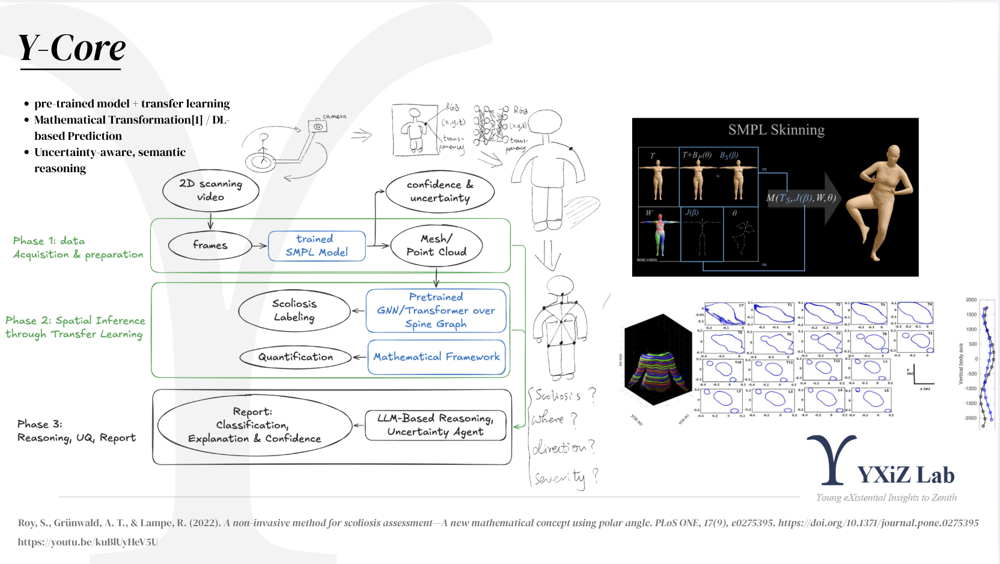
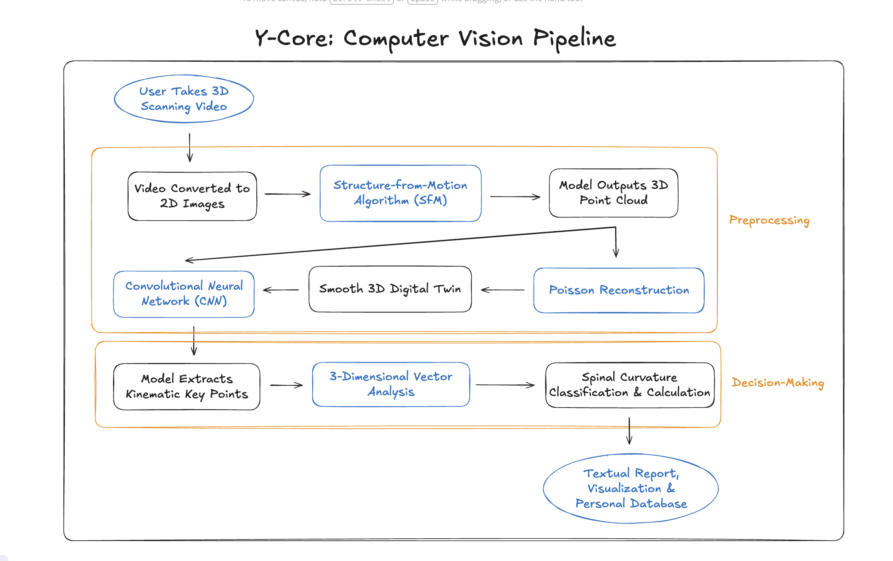

Complete product workflow
At the heart of YXiZ is our Y-Core system — a computer vision engine that turns simple 3D scan videos into powerful insights about your posture and spinal health. Once a user records and uploads a scan, the system converts the video into detailed 3D models using advanced reconstruction algorithms. These models are refined into smooth, lifelike digital twins, allowing our AI to precisely map spinal curvature and key body points. From there, Y-Core analyzes alignment and movement patterns, classifies spinal curvature, and generates easy-to-understand visual and written reports. Every scan adds to your personal progress database, helping you and your coach track changes and improvements over time.

Computer vision pipeline
The YXiZ system connects every part of your posture journey — from scan to recovery — in one seamless loop. It starts when users upload a 3D scan, which our Y-Core engine analyzes to visualize spinal curvature and posture details. The results are turned into interactive 3D models, clear written reports, and stored securely in each user’s personal database. Over time, YXiZ tracks changes and generates long-term progress reports to help users see real improvement. On the other side, certified rehabilitation coaches upload personalized tutorials and exercise plans through their own interface. These programs are matched to users’ needs and delivered directly through the platform, creating a continuous feedback cycle between assessment, recommendation, and recovery.